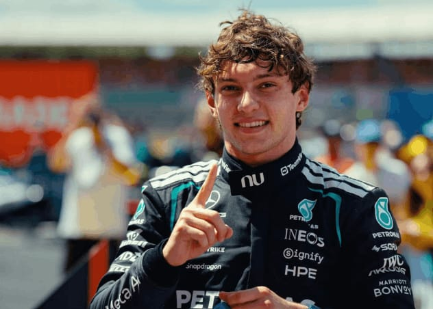

Sábado de Ouro em Silverstone: Kimi Antonelli vence Sprint e crava a pole do GP da Grã-Bretanha.

Sábado de Ouro em Silverstone: Kimi Antonelli vence Sprint e crava a pole do GP da Grã-Bretanha.
https://www.metropoles.com/esportes/formula-1-kimi-antonelli-garante-pole-position-no-gp-da-gra-bretanha
O sábado do GP da Grã-Bretanha de 2026 foi uma jornada absolutamente perfeita para o italiano Andrea Kimi Antonelli, piloto da Mercedes. Em um circuito de Silverstone lotado e sob sol, o líder do campeonato mundial dominou as ações ao vencer a Corrida Sprint e, poucas horas depois, cravar a pole position para a corrida principal. Enquanto a escuderia alemã celebrava o prodígio de 19 anos, os donos da casa sofreram duros golpes no grid.
Corrida Sprint: Antonelli bate Hamilton em Silverstone
A manhã começou com a promessa de festa britânica, já que Lewis Hamilton, agora correndo pela Ferrari, largava na pole position da corrida curta. Contudo, a liderança do heptacampeão durou pouco diante do ritmo agressivo do jovem italiano.
Manobra decisiva: Antonelli partiu da segunda posição, pressionou e realizou uma ultrapassagem precisa sobre Hamilton no meio da prova.
Controle de corrida: Após assumir a ponta, o jovem da Mercedes abriu vantagem confortável e cruzou a linha de chegada sem sobressaltos.
O pódio: Lewis Hamilton terminou em um seguro segundo lugar, seguido de perto por Lando Norris (McLaren) fechando o top 3.
Frustração local: George Russell ficou apenas em quarto, queixando-se abertamente de uma falta de ritmo crônica em seu carro.
Classificação: Sábado perfeito e quinta pole de Kimi no ano
Na sessão classificatória oficial para o grande prêmio, Antonelli coroou seu dia histórico ao garantir o direito de largar na frente no domingo com a marca de sua quinta pole position na temporada 2026.
A sessão foi marcada pelo equilíbrio extremo, decidida nos milésimos de segundo durante as últimas tentativas no Q3. O italiano registrou a melhor volta superando Charles Leclerc por apenas 0,175 segundos. Hamilton se estabeleceu em terceiro no grid.
O contraste do dia na garagem da Mercedes ficou por conta de George Russell. O piloto britânico bateu no muro ainda no início do treino qualificatório, danificando o carro e comprometendo seu rendimento. Mesmo retornando à pista, Russell não conseguiu acompanhar o ritmo dos líderes e teve de se contentar com o quarto lugar no grid de largada.
O Grid de Largada (Top 5)
Kimi Antonelli (Mercedes)
Charles Leclerc (Ferrari)
Lewis Hamilton (Ferrari)
George Russell (Mercedes)
Isack Hadjar (Red Bull)
Brasileiros e Destaques
O brasileiro Gabriel Bortoleto, correndo pela Audi, teve um sábado de sentimentos mistos. Na corrida curta, o jovem cometeu erros na largada, caindo para as últimas posições e terminando em um distante 13º lugar. Já na classificação principal, Bortoleto flertou com a ida ao Q3, mas acabou eliminado no detalhe por escassos 32 milésimos de segundo, garantindo a 11ª posição de largada.
Com o término das atividades de sábado, o GP da Grã-Bretanha desenhou um cenário de alta tensão para o domingo, colocando a Ferrari em caça direta contra a Mercedes em solo britânico.
Fontes:
https://share.google/DUfUtce7THN2k3cyF
https://share.google/riix68eZkgcaYLhLx
https://share.google/fFJn9M7bhly4lwjsh
Reportagem escrita por: Li_yamauti